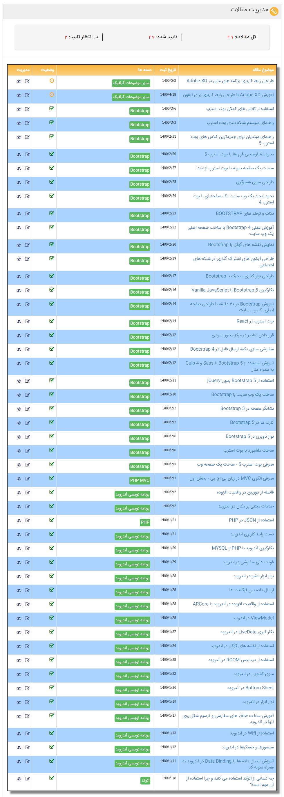

ترجمه انگلیسی به فارسی مقاله های بوت استرپ برای سایت کلیک
استفاده از کلاس های کمکی بوت استرپ
راهنمای سیستم شبکه بندی بوت استرپ
راهنمای مبتدیان برای جدیدترین کلاس های بوت استرپ 5
نحوه اعتبارسنجی فرم ها با بوت استرپ 5
ساخت یک صفحه نمونه با بوت استرپ از ابتدا
طراحی منوی همبرگری
نحوه ایجاد یک وب سایت تک صفحه ای با بوت استرپ 4
نکات و ترفند های BOOTSTRAP
آموزش عملی Bootstrap 4 با ساخت صفحه اصلی یک وب سایت
نمایش نقشه های گوگل با Bootstrap
طراحی آیکون های اشتراک گذاری در شبکه های اجتماعی
طراحی نوار کناری متحرک با Bootstrap
بکارگیری Bootstrap 5 با Vanilla JavaScript
آموزش Bootstrap در ۳۰ دقیقه با طراحی صفحه اصلی یک وب سایت
بوت استرپ در React
قرار دادن عناصر در مرکز محور عمودی
سفارشی سازی دکمه ارسال فایل در Bootstrap 4
آموزش استفاده از Bootstrap 5 با Sass و Gulp 4 به همراه مثال
استفاده از Bootstrap 5 بدون jQuery
ساخت یک وب سایت با Bootstrap
نشانگر صفحه در Bootstrap 5
کارت ها در Bootstrap 5
نوار ناوبری در Bootstrap 5
ساخت داشبورد با بوت استرپ
معرفی بوت استرپ 5 - ساخت یک صفحه وب
استفاده از JSON در PHP
مترجم مقاله ها: مهندس محمدرضا امانی
